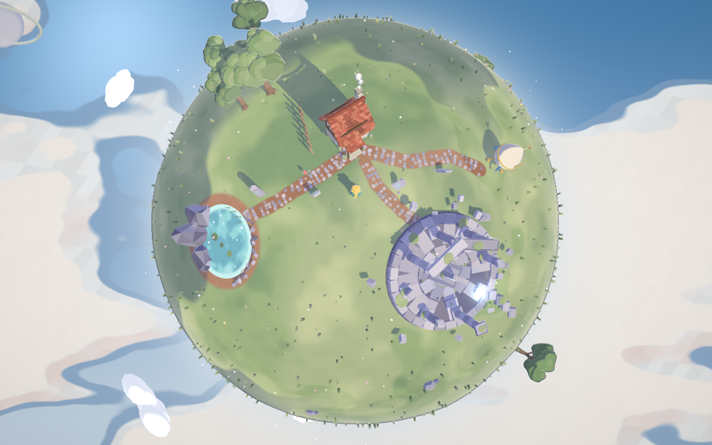
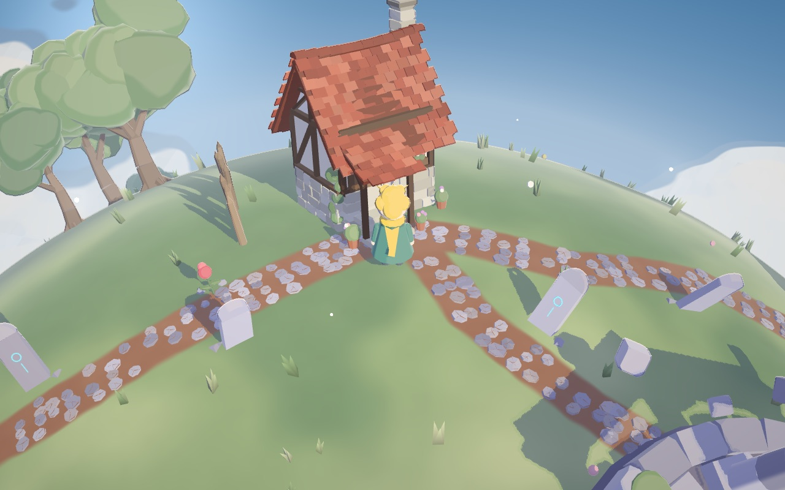
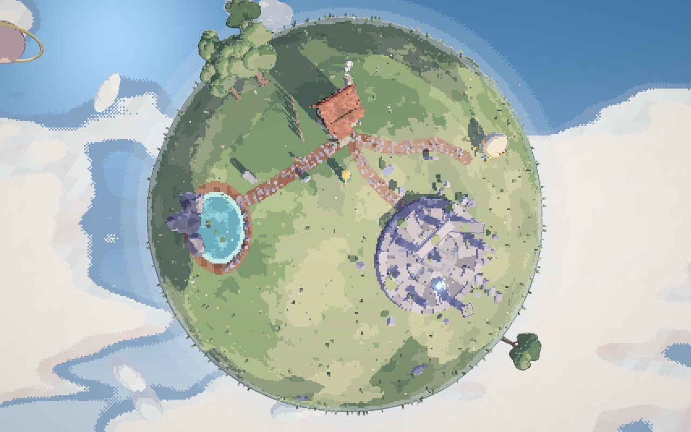

一顆巴掌大的星球，一間小屋，一池水，一座沒有人記得的遺跡。先別急著找目標，這次只是來看風景的。
A planet the size of your palm: a cottage, a pond, a ruin nobody remembers. No goals this time. We’re just here for the view.

進入 DemoOpen the demo這還不是遊戲。沒有任務、沒有存檔、沒有能撿的東西。這一版是為了看畫面做的：同一顆星球、同一批物件，用三種方式渲染，先決定這個世界最後要長什麼樣子。
This isn’t a game yet. There are no quests, no saving, nothing to pick up. This build exists to look at: one planet, one set of objects, rendered three ways, to settle what this world should finally look like.
右上角有三個按鈕。畫風在「薩爾達」的柔和兩階光影、「光遇」的逆光與光束、「像素」的方格色塊之間切換；描邊可以選無、同色加深、或深色線。像素風底下還能調像素大小和色塊邊緣。多按幾下，看看哪一種讓你想住下來。
Three buttons sit in the top right. Style switches between Zelda-like soft cel shading, Sky-like backlight with god rays, and chunky 3D pixel art; Outline chooses none, a darker shade of the object’s own colour, or ink. The pixel style also lets you change pixel size and how colour blocks meet. Try them all and see which one you’d want to live in.
一間半木構的小屋，門口有燈，煙囪會冒煙。一池水，岸邊是被水切出稜角的灰色岩層。三棵樹擠在一起，蜿蜒的石子路串起每個地方，路邊立著半埋的石碑。遠一點有一圈石柱圍成的遺跡，中間飄著一團瑩藍色的光，不知道是誰留下的。還有一艘小太空艇，走近按 E，可以飛去隔壁那顆粉紅色的月亮，再飛回來。
A half-timbered cottage with a lantern by the door and smoke from the chimney. A pond, its far bank cut into grey, angular rock. Three trees huddled together, winding cobbled paths joining everything, half-buried tablets along the roadside. Further off, a ring of stone columns with a drifting blue light at its centre, left by no one knows whom. And a little spaceship: walk up, press E, and fly to the pink moon next door and back.
星球視角可以把整顆星球轉著看，生活視角則跟在旅人身後。白天的雲會在地上投下影子，天上還掛著別的星球，之後會一顆一顆變成能去的地方。
Planet view lets you spin the whole world in your hands; life view follows the traveller. Clouds cast moving shadows over the ground, and other worlds hang in the sky, waiting to become places you can visit.
Joan 想做的是一款在小星球之間拓荒的遊戲：自己選位置蓋屋子、圍籬笆，收集散落各處的靈魂碎片，再搭太空艇去下一顆星球。畫風定下來以後，這些才會一樣一樣加進來。現在你看到的，是地基。
What Joan has in mind is a game about settling small worlds: choosing where your cottage and fences go, gathering soul fragments scattered across the land, then flying on to the next planet. Once the look is settled, those pieces will arrive one at a time. What you see now is the foundation.


以 three.js 即時渲染。建築與地景由程式生成；靈體動物以公開授權的模型為底形再平滑重塑：公鹿來自 madtrollstudio（CC BY 3.0）、母鹿與兔子來自 Google Poly（CC BY 3.0）。像素風是真正的 3D 場景先以低解析度著色、再以全解析度描邊合成，不是事後的馬賽克濾鏡。
Rendered in real time with three.js. Buildings and landscape are generated in code; the spirit animals start from openly licensed base meshes that are smoothed and reshaped at load: stag from madtrollstudio (CC BY 3.0), doe and rabbit from Google Poly (CC BY 3.0). The pixel style shades the real 3D scene at low resolution and composites full-resolution edges over it, rather than applying a mosaic filter afterwards.